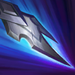
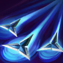
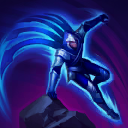
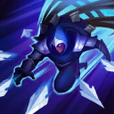

起手裝備
 長劍
長劍
同路參考支持妖夢→暮色→席利妲主線；鞋改爆發之靴→碎甲者之靴，與物穿刺殺、脫戰轉線定位一致。防禦鞋情境同步，不再預設貪婪續航線。


五件成裝與鞋子分開列示；起手與核心是購買路線，不是額外佔用的成裝欄位。鞋子完成時機仍依對線壓力與回城金錢調整。


電刑、即刻衝擊、連環攻擊、眼球與骨甲保留，與同路公開方案一致；三層裂傷後仍須普攻引爆。


閃現點燃保留中路斬殺，不使用來源打野頁的重擊。
加點優先：W > Q > E
W>Q>E同路核對完成；二技服務清線，三技只需一點翻牆，撤退牆面另有個別冷卻。
技能命中敵方英雄或大型野怪會附加裂傷，最多三層；對滿層目標普攻會觸發流血，是清野與爆發收尾的核心。

遠距施放會躍向目標，近戰範圍施放則造成暴擊傷害；擊殺目標可回復生命並返還部分冷卻。

向前扔出匕首，短暫延遲後返回。去程與回程都會造成傷害，回程命中會緩速並疊加裂傷。

翻越附近地形，讓塔隆能快速穿梭野區與建立意想不到的 Gank 角度；同一段地形在一段時間內不能重複翻越。

向四周射出刀刃並進入潛隱、獲得跑速；離開潛隱或攻擊目標時，刀刃會匯聚至塔隆或被鎖定的敵人。
技能先疊三層再普攻觸發流血，翻牆對同段地形有個別冷卻；追擊需規劃下一面牆。
2技去回程 → 1技突進 → 普攻引爆裂傷 → 立即後撤
二技兩段都命中後再用一技補第三層，普攻觸發流血；對手支援靠近時不要貪後續普攻。
2技去程 → 閃現調位 → 1技近身 → 2技回程 → 普攻引爆 → 點燃
二技去程後閃現改變角度，讓回程更容易命中；三層裂傷完成後普攻引爆並用點燃收尾。
4技潛隱加速 → 2技雙段 → 1技貼近 → 普攻引爆 → 3技翻牆離場
大絕隱藏進場方向並提高跑速，完成裂傷爆發後立刻尋找最近牆體撤退，不要留在後排區等待第二套。
二技去程與回程同時命中可疊兩層裂傷，接一技與普攻觸發流血。三級後快速清線，利用三技翻越側牆消失在視野中，迫使邊線保持警戒。
妖夢鬼刀 → 暮色黑刃 → 席利妲咒怨保持物穿核心；鞋線改爆發之靴 → 碎甲者之靴，支援清線後跨牆遊走及短爆發。敵方法傷與控制很高時整條換水星鞋線，不為物穿放棄必要生存；本頁帶點燃而非重擊。
正面切坦克收益很低，耐心等待後排與保護者分開。大絕潛隱接近、完成三層裂傷爆發後立刻翻牆離場，沒有退路時不要先手進場。
保留塔隆中路原有對局並補應對窗口，未搬入jungle對線名單。
對局名單是機制與分路判斷，不代表固定勝率；需同時看雙方熟練度、兵線與陣容。
妖夢與物穿鞋支援推線後遊走；先確定退場牆面可用，對墨菲特等護甲前排不強求正面單殺。
W蓄力時離開嘲諷圈，逼出E後再進場；支援要計入他的R反打。
以塔隆的控制與撤退技能管理換血；重要反開技能未交時不強行進入對手範圍。
依本頁目前五件成裝與鞋線替換；同一格多個建議擇一。先看實際傷害和控制，再決定是否犧牲輸出或保命。
高
觸發：先重創小件過渡，需要完整重創成裝時由後段防禦格換生化龐克鏈鋸之劍，保留技能穿透核心。
守護天使 → 生化龐克鏈鋸之劍
先重創小件過渡，需要完整重創成裝時由後段防禦格換生化龐克鏈鋸之劍，保留技能穿透核心。
先重創小件過渡，需要完整重創成裝時由後段防禦格換生化龐克鏈鋸之劍，保留技能穿透核心。
鞋子更換時需連同三級升級路線一起更換；五件成裝不含鞋，主動裝仍占成裝格。
高
觸發：只有護盾持續妨礙擊殺時才換巨蛇鋒牙；原本的守護天使的物防與復活保護會降低。
守護天使 → 巨蛇鋒牙
只有護盾持續妨礙擊殺時才換巨蛇鋒牙；原本的守護天使的物防與復活保護會降低。
只有護盾持續妨礙擊殺時才換巨蛇鋒牙；原本的守護天使的物防與復活保護會降低。
鞋子更換時需連同三級升級路線一起更換；五件成裝不含鞋，主動裝仍占成裝格。
高
觸發：復活甲提供團戰第二次機會，仍須隊友保護復活位置；已有復活甲時保留，別重複購買。
目前配置已包含對應工具；先確認是否能有效使用，不需重複購買。
鞋子更換時需連同三級升級路線一起更換；五件成裝不含鞋，主動裝仍占成裝格。
高
觸發：法術爆發為主時後段改魔提斯深淵；若另外已換盾弓或史特拉克，需重新檢查命脈重複。
守護天使 → 魔提斯深淵
法術爆發為主時後段改魔提斯深淵；若另外已換盾弓或史特拉克，需重新檢查命脈重複。
法術爆發為主時後段改魔提斯深淵；若另外已換盾弓或史特拉克，需重新檢查命脈重複。
鞋子更換時需連同三級升級路線一起更換；五件成裝不含鞋，主動裝仍占成裝格。
高
觸發：魔法傷害與可被韌性縮短的控制占主導時，整條鞋線改水星之靴→鎖鏈軍靴；韌性不縮短擊飛。
爆發之靴 → 水星之靴
魔法傷害與可被韌性縮短的控制占主導時，整條鞋線改水星之靴→鎖鏈軍靴；韌性不縮短擊飛。
魔法傷害與可被韌性縮短的控制占主導時，整條鞋線改水星之靴→鎖鏈軍靴；韌性不縮短擊飛。
鞋子更換時需連同三級升級路線一起更換；五件成裝不含鞋，主動裝仍占成裝格。
7.3d差異核對：本頁核對官方英雄／裝備差異與現行配置參照；未列的技能不表示已完成逐級實測。查看校正範圍。
本頁校正版本：7.3d；校正日期：2026-10-25。
參考來源標示版本：7.3c
本輪核對官方版本差異、道具/符文引用、五成裝與鞋線、逐級加點及情境替換一致性。Tier及玩法屬本站編輯判斷，不是官方排名或台服勝率；未公開的全級技能表不推算。
評級理由：7.3c 維持 A（本站判斷）。本站A以中路推線後跨牆遊走及單點爆發為定位；7.3b妖夢與電刑有利前段節奏，但護甲前排和反開仍限制正面進場，不以打野Tier代用。 7.3c 未改動此分路的英雄數值，沒有新證據只因版本號而升降。
Riot 官方資料 ↗ · Riot 官方資料 ↗ · Riot 官方資料 ↗ · Riot 官方資料 ↗ · Riot 官方資料 ↗ · WildRiftFire 參考攻略 ↗ · wr-meta.com ↗
7.3c 的直接英雄倍率改動屬符文大亂鬥；本召喚峽谷配置承接 7.3b。未把模式專屬增削轉為峽谷增削。
五件成裝、獨立鞋線、起手、核心、情境替換引用與一般符文列別均重新檢查；移除裝備不列入當前推薦。